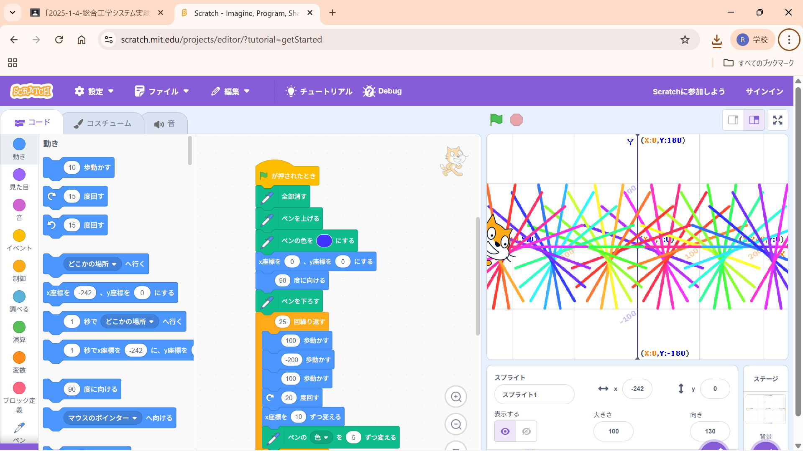
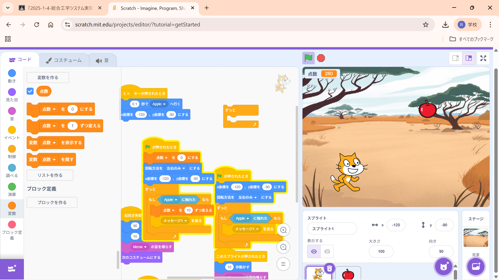

1週目のレポート ： 公大高専１年実習I-1
4b班28番 ニックネーム
第1週目
1-1 サイエンスアート

1.内容
今回の実習ではscratchによる簡単なアートの作り方について学びました。プログラミングの世界では色も数字で表します。
アートを作るときには毎回ペンを上げる作業が必要です。
2.感想
中学校や小学生の時にやったようなものでしたが今やってみるといろいろな学びがありました
例えば一つ線を描いた後に色を変えるということはやったことがなかったです。
1-2 ゲーム

1.内容
scratchによるゲーム作成キャラクターの動きや乱数の使い方
音の付け方やコスチュームの変更方法など。
2.感想
自分でゲームを作ってみると案外楽しかったです。
特にゲームが完成してから隠しコマンドを作ってみたりしたらとても難しかったですが楽しかったです。
1-3 ホームページ作成
私のホームページ
1.内容
ホームページの作成完成されたhtmlの編集
githubのアカウント作成、ログインforkのコピーなど
2.感想
htmlは初心者なのでホームページを作れるか心配でしたがすでにほとんど完成された状態だったので
簡単に編集ができました。なぜこんなにも簡単にできてしまうのか疑問に思いました。
各ページへのリンク
1週目のレポート
2週目のレポート
3週目のレポート
私のホームページ